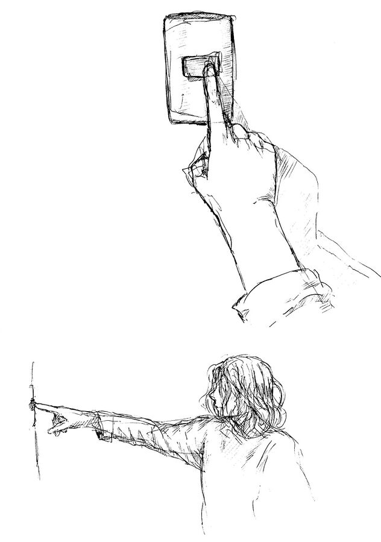
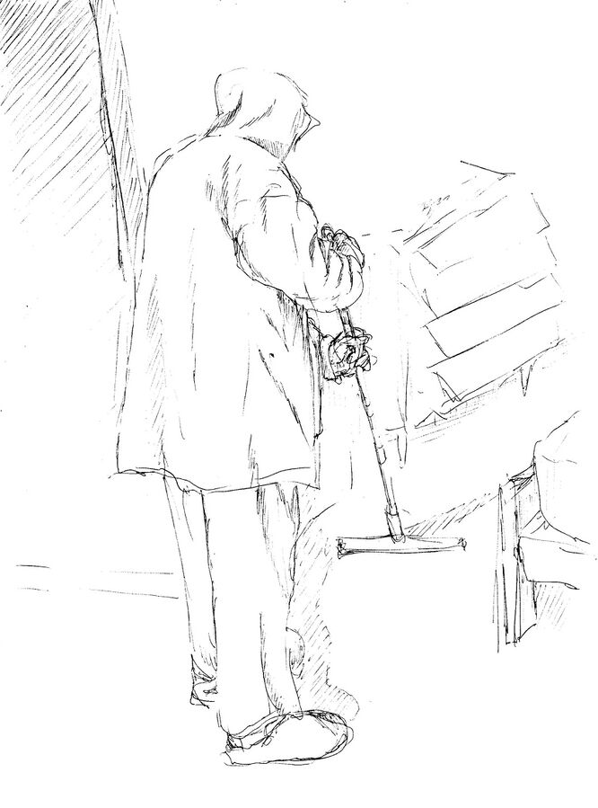
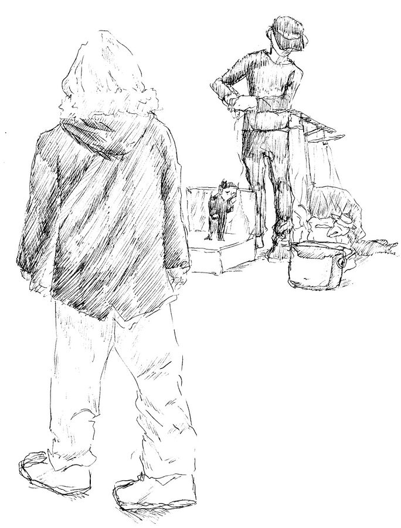
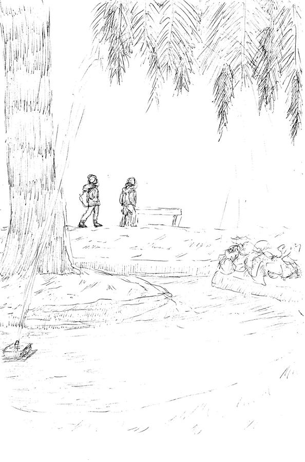
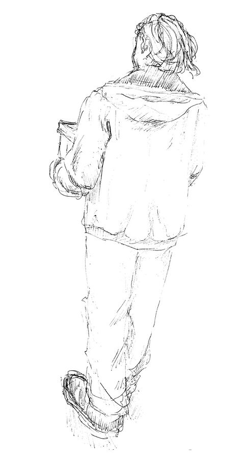
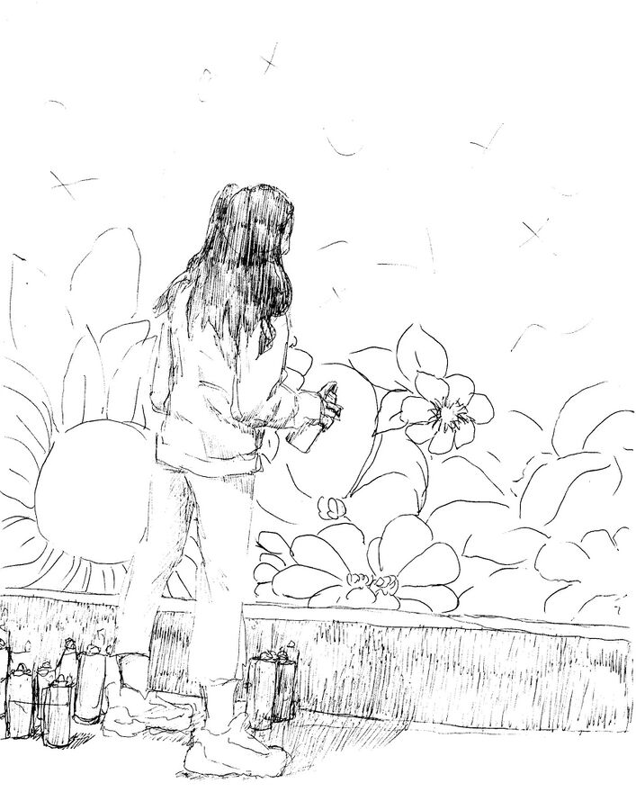
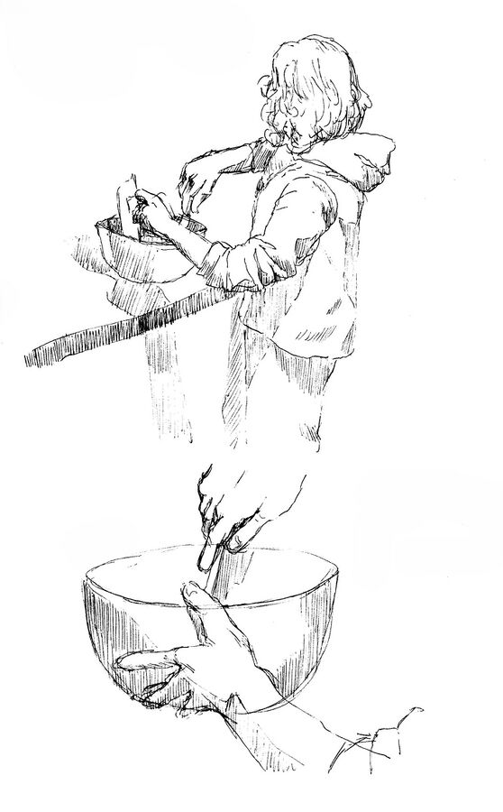
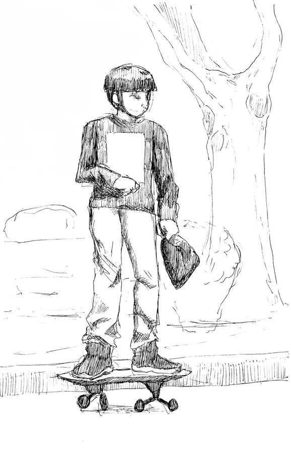
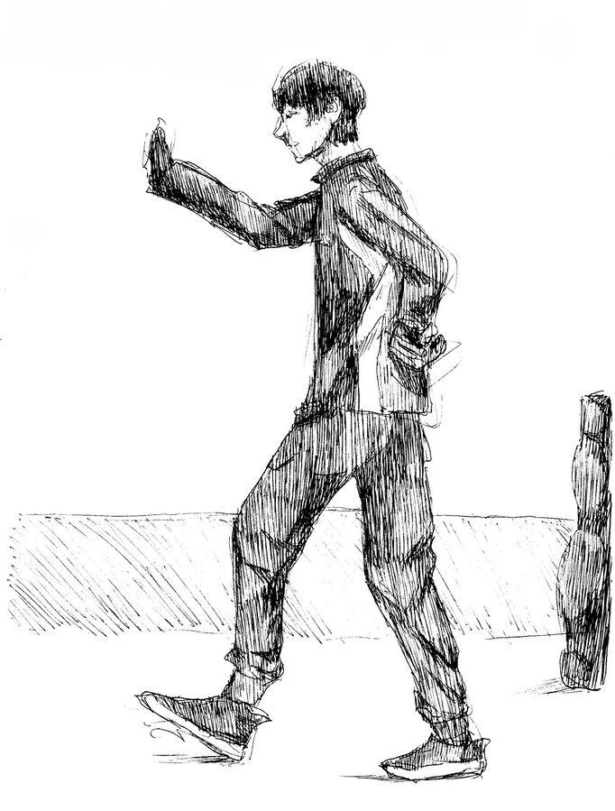

Desde corta distancia solo se produce el extendimiento del brazo, dirigiendo el torso al objeto que produce la necesidad del movimiento.
A larga distancia el cuerpo no solo se debe extender sino también mover, la necesidad que hace que el cuerpo pase a nivel más activo lo que genera un mayor despliegue del mismo.
El movimiento del trapeador es un va y ven entre la distancia con el individuo, a la vez este acerca y aleja sus brazos del pecho, lo mismo pasa con los pies, que entre pasos se juntan y se alejan; donde se abre un despliegue y cierre continuo.
A través del gesto del constante subir y bajar de los hilos, se produce la ilusión del movimiento propio de la marioneta, donde extiende y dobla sus brazos.
El elemento produce un arco similar al de un despliegue, donde se provoca la ilusión de que encierra en su interior el ocurrir, del pasar del movimiento en lo cotidiano.
Los pasos se producen de manera infrecuente, en un gesto animado, se detiene abruptamente en ese momento la cabeza es la cual se mueve, para nuevamente abrir el movimiento, retomar el paso.
Después de agachar su cuerpo con un brazo vacilante entre las latas, vuelve a su máximo, en una postura constante, con el brazo extendiéndose y contrayéndose; hacia el foco que produce el despliegue de esta forma el cuerpo.
El brazo se mueve sobre su propio eje, se extiende y contrae mientras que el resto de el cuerpo permanece en cierto "reposo"; se desplaza alrededor de un punto en cuestión, el foco del propósito del movimiento.
El cuerpo se desplaza por un medio que va más allá del movimiento propio por parte suyo, estando en aparente reposo manteniendo el equilibrio después de darle impulso a medio de transporte; siendo que el suceso acabaría una vez que el transporte parara o el sujeto perdiera el equilibrio
En este acto se siguen haciendo movimientos en los cuales extiende y contrae brazos y piernas, generando distintos tipos de despliegue del cuerpo durante la sucesión de pasos; este momento acabaría cuando la música termine o se cambiaría por otro tipo de sucesión y ritmo si se cambiara la música.

Al encaramarse el cuerpo se contrae en un similar al mínimo de su despliegue, para mantener el equilibrio arriba de la escultura; para volver a un estado similar al máximo se debería desligar de la misma, ese sería el fin del momento.